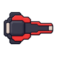
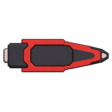
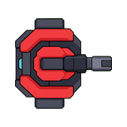

행동은 이미 충분히 다르다
돌진, 직선 사격, 광선 저격, 횡단 폭격, 성장 투사체, 틈 제어, 분열, 반사, 공명, 과부하가 실제 전투 계약으로 분리되어 있다. 부족한 것은 수량보다 관계의 설명이다.
CARD BORNE · ORDINARY ENEMY SYNTHESIS · 2026-08-20
두 설계 보고서와 세 장의 외부 콘셉트 PNG를 현재 코드·production 자산과 대조했다. 결론은 행동 역할은 보존하고, 플레이어가 취할 반응을 7개 문법으로 묶으며, 현행의 간단한 PNG를 기준점으로 재사용하는 것이다.
| 항목 | (1) 초기안 | 확장안 | 종합 판단 |
|---|---|---|---|
| 분류 | 8패밀리, 4티어, 32트레잇 | 유지형을 더한 9패밀리, 3티어, 패밀리별 5트레잇 | 반응 문법만 채택. 콘텐츠 수량은 축소 |
| 공통 핵심 | 패밀리 실루엣 70%, 티어 20%, 특성 10% | 패밀리 코어 70–80%, 한 적에 특성 하나 | 실루엣 우선·한 변형 원칙 채택 |
| 팩 구성 | 한 패밀리·한 티어·공유 특성, 셔플백 추첨 | 3–8기 소집단, 혼성은 지휘형과 최대 두 하위군 | 3–6기, 공유 특성 1개로 작은 실험 |
| 고정 시설 | 포탑을 별도 패밀리로 취급 | 고정은 패밀리가 아니라 배치 방식 | 확장안 채택: 고정은 축 |
| 지휘형 | 단독 출현 금지, 드문 이중 특성 허용 | 사망 시 팩 전술만 해제, 생존자는 원래 행동 유지 | 후자만 프로토타입. 이중 특성은 보류 |
| 현재 ID 처리 | 개념 중심 | 대규모 이름 변경·미사용 삭제 제안 | 현재 런타임 참조와 충돌하므로 채택 금지 |
돌진, 직선 사격, 광선 저격, 횡단 폭격, 성장 투사체, 틈 제어, 분열, 반사, 공명, 과부하가 실제 전투 계약으로 분리되어 있다. 부족한 것은 수량보다 관계의 설명이다.
compression→gap, reflect→shield, resonance→range, overload→pull은 같은 PNG를 공유한다. 새 시스템을 만들기 전에 이 관계를 이름·도감·조합에 드러내면 된다.
armored, overclocked, heavy가 한 적에 하나씩 적용된다. 45개 새 특성보다 이 3개의 인지성과 조합 품질을 먼저 증명할 수 있다.
패밀리 이름은 내부 상속 계층이 아니라 플레이어가 즉시 선택할 행동을 뜻한다. 정확한 공격은 큰 텔레그래프와 개별 역할이 설명한다.
| 반응 문법 | 플레이어가 읽을 동사 | 현재 역할 예시 | 형태 규칙 | 권장 기준 PNG |
|---|---|---|---|---|
| 접근 압박 | 거리를 벌린다 | melee, edge, pull, melee_02, overload | 전방 쐐기·턱·압축된 세로 질량 | ordinary_edge_01 |
| 원거리 사격 | 사선을 끊는다 | ranged, lane, beam, range, resonance | 몸체보다 긴 한 개의 사격 축 | ordinary_beam_01 |
| 지역 거부 | 표시된 바닥을 떠난다 | area, sweep, growth | 넓은 적재부·투하 방향·큰 포구 | ordinary_sweep_01 |
| 진로 제어 | 안전한 틈을 고른다 | gap, compression | 열린 중심·분리된 큰 패널 | ordinary_gap_01 |
| 방어·반사 | 측후면으로 돈다 | shield, reflect | 한쪽을 지배하는 연속 방벽 | ordinary_shield_01 |
| 유지 지원 | 지원원을 먼저 끊는다 | support_01, support_02 | 넓은 안정형 몸체 + 코드 소유 링크 | ordinary_support_01 |
| 증원·지휘 | 불어나기 전에 제거한다 | pulse, support_03 | 수용 공간·방출구·분리 가능한 덩어리 | ordinary_support_03 |
| 고정 배치 축 | 엄폐와 우선순위를 다시 잡는다 | fixed ranged/area/beam/support | 큰 기반부·무이동 중심·기능별 한 부품 | ordinary_fixed_ranged_01 |
“고정”은 위 7개 중 하나에 붙는 배치 속성이다. 예: 고정 사격, 고정 지역 거부, 고정 유지 지원. 이를 별도 생물군처럼 늘리지 않는다.
아래 이미지는 모두 현재 저장소의 production PNG다. 새로 생성하거나 편집하지 않았다. 이 보고서에서는 각 가족의 단순한 형태 기준으로만 재사용하며, 다른 역할의 production 매핑을 자동 변경하지 않는다.

한 덩어리의 전방 쐐기와 강한 세로축. 작은 장식 없이 돌진 방향을 읽힌다.
actor_enemy_ordinary_edge_01_base.png

몸체와 한 개의 긴 레일만으로 사선 위협을 설명한다.
actor_enemy_ordinary_beam_01_base.png

넓은 적재부와 뾰족한 진행 방향이 횡단 폭격 역할에 맞는다.
actor_enemy_ordinary_sweep_01_base.png

열린 중심과 세 개의 큰 분리 패널이 “틈을 고른다”는 행동을 보조한다.
actor_enemy_ordinary_gap_01_base.png

연속된 전면 방벽 하나가 몸체보다 먼저 보인다.
actor_enemy_ordinary_shield_01_base.png

넓고 안정적인 몸체를 유지하고, 정확한 지원 대상은 현재의 수리 링크가 설명한다.
actor_enemy_ordinary_support_01_base.png

큰 수용 몸체와 전방 방출부가 다른 지원형과 구분된다.
actor_enemy_ordinary_support_03_base.png

원형 기반부와 단일 포신이 이동 적과 즉시 분리된다.
actor_enemy_ordinary_fixed_ranged_01_base.png
Tier
초·중·후반 압력은 체력, 빈도, 팩 구성, 공격 계약으로 조절한다. 별도 T1/T2/T3 PNG 27장은 만들지 않는다. 크기 변화도 충돌 반경과 시각 반경 계약 안에서만 쓴다.
Trait
먼저 기존 armored, overclocked, heavy만 사용한다. 작은 배지 대신 외피, 속도 리듬, 큰 체적처럼 몸 전체에서 읽히는 한 변화로 보강한다.
Pack
3–6기, 주 역할 하나, 보조 역할 최대 하나, 공유 특성 하나를 기본으로 한다. 같은 조합의 연속 출현은 초기안의 셔플백으로 막는다.
| 제안 | 판단 | 이유 |
|---|---|---|
| 기존 범용 3특성 | 즉시 유지 | 이미 코드·상태·대상 역할이 있고 한 적 한 특성 규칙과 맞는다. |
| 패밀리별 5특성 | 1개씩만 검증 후 확대 | 제안 대부분이 현재 고유 역할과 중복된다. 예: 저격, 끌어당김, 반사, 지뢰는 이미 별도 적이다. |
| 희귀 이중 특성 | 보류 | 실루엣·상태·텔레그래프의 주목 경쟁이 커지고, 공정한 첫 판독을 해친다. |
| 지휘형 사망 시 전술 해제 | 소규모 프로토타입 | 현재 support_03 자산을 재사용할 수 있고 목표 우선순위를 만든다. 생존자의 기본 행동은 유지한다. |
| 고정형 별도 패밀리 | 통합하지 않음 | 고정은 이동 상태다. 사격·지역·지원 기능이 서로 다르므로 기능 가족에 배치 축으로 붙인다. |
이름과 도감
내부 ID는 그대로 둔다. 한국어 표기만 “레일 저격기”, “횡단 폭격기”, “틈 유도기”, “반사 방벽기”처럼 핵심 동사·대응법을 담는다. 도감은 7개 반응 가족으로 묶고, 변형 관계를 한 줄로 보여 준다.
조합
예: 방벽 1 + 레일 2, 진로 제어 1 + 돌진 3처럼 서로 다른 대응을 두 개만 겹친다. 한 팩에 지역 거부·제어·광선·반사를 모두 넣어 읽기 시험으로 만들지 않는다.
상태 전달
PNG는 정체성만 담당한다. 공격 방향, 위험 면적, 지원 링크, 반사 가능 시간, 지휘 연결은 코드 소유 텔레그래프로 전달한다. 그림이 공격 판정이나 충돌 진실을 소유하지 않는다.
진행
처음에는 한 가족의 기본 역할을 단독으로 충분히 가르친다. 이후 같은 PNG를 공유하는 후기 변형을 넣어 “아는 몸체, 달라진 규칙”으로 읽히게 한다. 이전 역할은 완전히 폐기하지 않는다.
support_03를 이용한 지휘 팩. 한 스테이지 또는 캡처 픽스처에서만 먼저 검증.C:\Users\BK\Downloads\cardborne_enemy_family_trait_report_ko (1).htmlC:\Users\BK\Downloads\cardborne_enemy_family_trait_report_ko.htmlart style.png, ChatGPT Image … 06_09_10 (2).png, ChatGPT Image … 06_09_10 (1).png6fa4dc17efc6aa2c6a799384bebe01f2f471e53d4b4e9590479f677341dc5edc / 47dc723c6349336725dece97e672d5a1c3949e17be355bce9e0b17895151fe18 / 73417b23ed42c96efaf8c146e68ff66d3ea6c55601a51ca921c2edfa3c708791 · 모두 탐색 자료로만 사용vehicle_enemy_archetypes.gd, vehicle_enemy_movement_policy.gd, vehicle_attack_contract.gd, vehicle_elite_trait_catalog.gd, vehicle_combat_stages.gd, vehicle_actor_visual_catalog.gd, production asset manifest와 PNGdocs/design/VISUAL_SYSTEM.md SHA-256 2e5cf7e3f156629bcbe956da0e6cb30f6d3b608d9c20122ec5285fa1562aa006docs/design/cardborne-universal-art-style-reference.png 기대·관측 SHA-256 96ccf5d053e66dd3a102ccdf39daefd0b0c54b0e88d20428b7ba1c894f002889외부 웹 검색은 생략했다. 이 판단은 제공 보고서·이미지와 현재 저장소의 행동·자산 계약 비교로 범위가 닫히며, 일반 레퍼런스를 더 모으는 것보다 최신 로컬 구현과의 충돌 확인이 더 중요했다.